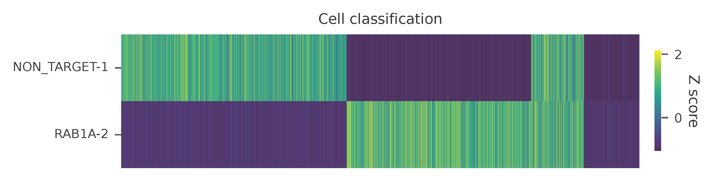
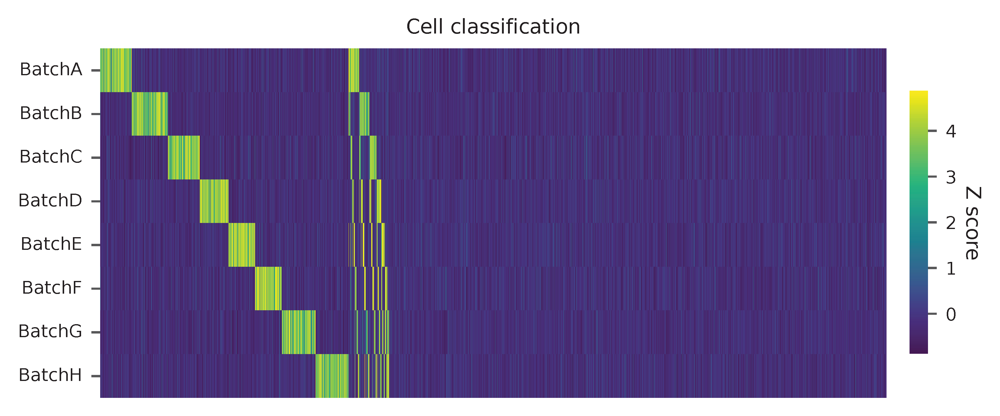

Peripheral Blood Mononuclear Cells with 8 Antibodies¶
Dataset: Cell hashing
Stoeckius, M., Zheng, S., Houck-Loomis, B., Hao, S., Yeung, B.Z., Mauck, W.M., 3rd, Smibert, P., and Satija, R. (2018). Cell Hashing with barcoded antibodies enables multiplexing and doublet detection for single cell genomics. Genome Biol. 19, 224.
Preparation¶
Download fastq files from European Nucleotide Archive.
$ wget ftp.sra.ebi.ac.uk/vol1/fastq/SRR828/007/SRR8281307/SRR8281307_1.fastq.gz
$ wget ftp.sra.ebi.ac.uk/vol1/fastq/SRR828/007/SRR8281307/SRR8281307_2.fastq.gz
Download cell barcode info.
These are the cell-associated barcodes in this single cell RNA-Seq library (determined by the number of transcriptomic UMIs captured per barcode).
$ curl -O https://ftp.ncbi.nlm.nih.gov/geo/samples/GSM2895nnn/GSM2895283/suppl/GSM2895283_Hashtag-HTO-count.csv.gz
$ gzip -dc GSM2895283_Hashtag-HTO-count.csv.gz | head -1 | sed 's/,/\n/g' | grep -v '^$' > cell_barcodes.txt
Inspect cell barcodes.
$ head cell_barcodes.txt
GGCGACTAGAGGACGG
CATCAAGGTCTTGTCC
AAACCTGAGTGATCGG
TGAGGGAGTACTTAGC
CCTAAAGAGATGTGGC
AGACGTTTCAGCCTAA
TGGGAAGCAACACCCG
CGATTGATCTTCGGTC
CATCGAAGTGATGCCC
TCAGATGCACGAGAGT
Prepare feature barcodes (hashtag-oligos, HTO).
$ gzip -dc GSM2895283_Hashtag-HTO-count.csv.gz | cut -d ',' -f1 | grep Batch | gsed 's/-/\t/g' > feature_barcodes.tsv
Inspect feature barcodes.
$ cat feature_barcodes.tsv
BatchA AGGACCATCCAA
BatchB ACATGTTACCGT
BatchC AGCTTACTATCC
BatchD TCGATAATGCGA
BatchE GAGGCTGAGCTA
BatchF GTGTGACGTATT
BatchG ACTGTCTAACGG
BatchH TATCACATCGGT
QC¶
Sample the first 20,000 read pairs for quality control (set by -n, default 100,000). Use -t to set the number of threads. The diagnostic results and plots are generated in the qc directory (set by --output_directory). By default, full length of read 1 and read 2 are searched against reference cell and feature barcodes, respectively. The per base content of both read pairs and the distribution of matched barcode positions are summarized. Use -r1_coords and/or -r2_coords to limit the search range. Use -cb_n and/or -fb_n to set the mismatch tolerance for cell and feature barcode matching (default 3).
$ fba qc \
-1 SRR8281307_1.fastq.gz \
-2 SRR8281307_2.fastq.gz \
-w cell_barcodes.txt \
-f feature_barcodes.tsv \
--output_directory qc \
-n 20000
This library is constructed using Chromium Single Cell 3’ Reagent Kits (v2 Chemistry). The first 16 bases are cell barcodes and the following 10 bases are UMIs. Based on the base content plot, the GC content of cell barcodes and UMIs are quite even. Ploy-A/T tail starts at base 26.


As for read 2, based on the per base content, it suggests that bases 0-11 are relatively GC balanced for the reads we have sampled. Starting from base 12, it is poly-A tail. Bases 0-11 are hashtag oligo sequences. Most of the reads have the correct structure.


The detailed qc results are stored in feature_barcoding_output.tsv.gz file. matching_pos columns indicate the matched positions on reads. matching_description columns indicate mismatches in substitutions:insertions:deletions format.
$ gzip -dc qc/feature_barcoding_output.tsv.gz | head
read1_seq cell_barcode cb_matching_pos cb_matching_description read2_seq feature_barcode fb_matching_pos fb_matching_description
NTCCGAACATATGAGAGCAATAGTCGTTT CGAACATGTAAGAGAG 3:17 1:0:2 NCATGTTACCGTGAAAAAAAAAAAAAAAAAAAAAAAAAAAAAAAAACAGCAATTGTCACTTATAGGAGGAGAAGAAGGGAAGGGGGGGGGGGGGGGAAA BatchB_ACATGTTACCGT 0:12 1:0:0
NAACGGATCCACGAATGAAGGACGCCTTT TACGGTATCCACGAAT 1:16 1:0:1 NNGNNAATGCGAGAAAAAAAAAAAAAAAAAAAAAAAAAAAAGGGGCGCTCTCTTCGGGGGGGCGGGGAGAGCGAAGGAGGGGGGGGGGGGGGGAAGGAG no_match NA NA
NGGCCAGTCTTCAACTGTTAACACTATTT GTCCTCAAGCTGTCTA 6:20 1:0:2 NNNNNNNNNNNNNAAANNAAAAAAAAAAAAAAAAAAAAAAAAAAAAAAGGTTTAAAAAGTGAAAGAGGGACAAAACGGGAAAAACGGGGGTGGGGAAAA no_match NA NA
NATCCAGCAATACGCTTTCCACGACATTT ATCCACCCATACGCTA 1:17 3:0:0 NNNNNNNNNNNNNAAANNAAAAAAAAAAAAAAAAAAAAAGTGGGGGGAAAGCGGTTTTGGGAGATAAAACGAAAAAGCGGCGGGGGGGGAAAAAGGTGA no_match NA NA
NTGCGATAGACACTAAGAGGAGTTCATTT CGCGGTAAGACACTAA 1:16 2:0:1 NCGATAATGCGACAAAAAAAAAAAAAAAAAAAAAAAAAAAAAAAAAAAACCCCCTTTGTTTTTATCGTAAAGATGGGAAGGGGGCGGTGGAGGGAAAAA BatchD_TCGATAATGCGA 0:12 1:0:0
NTGATCCAGAAGGTGAGGGAGGCTGATTT AGATTGCGTGAGGGAG 7:21 1:0:2 NNNNNNNNNNNNNNAANNAAAAAAAAAAAAAAAAAATCACCCCCCCCCCCCTTTTGGTTCAAAAACGGAAAAAGCGCCGCGGGGGGAAAGAGTGTAAAT no_match NA NA
NTGGGTCAGGCCGAATTGAAGGGATGTTT GAAATGAAGTGAAGTT 12:28 3:0:0 NNNNNNCTATCCAAAANNAAAAAAAAAAAAAAAAAAAAAAAAAAAAAAACCCCTTCAATTGGCCCAGACCCAACACTCGAAGGGCCGGCTGGCAGCAAA no_match NA NA
NGAGAAGTCTCGATGAATCTAGCCGCTTT CGATTGAAGCTAGCCC 10:25 2:0:1 NNNNNNNNNCTNCAAANNAAAAAAAAAAAAAAATAAAAAAAACGGGCTGATCCCAAGCAGACGTCACAAAGAAGCGAGAGAGTGGGATTGAGAAAAAGA no_match NA NA
NCACGGAGTTCCCTTGCCAATGTAGTTTT AGGGAGTTCGTTTGCC 2:18 3:0:0 NGCTTACTATCCTAAAAAAAAAAAAAAAAAAAAAAAAAAAAAAAAATATGGGGGGGGGGAATCGGGGGGGAGGGGAAAGGGGGGGTGGGGGAAAAAAGA BatchC_AGCTTACTATCC 0:12 1:0:0
Barcode extraction¶
The lengths of cell and feature barcodes (hashtags) are all identical (16 and 12, respectively). And based on the qc results, the distributions of starting and ending positions of cell and feature barcodes are very uniform. Search ranges are set to 0,16 on read 1 and 0,12 on read 2. One mismatch for cell and feature barcodes (-cb_m, -cf_m) are allowed. By default, three ambiguous nucleotides (Ns) for read 1 and read2 (-cb_n, -cf_n) are allowed.
$ fba extract \
-1 SRR8281307_1.fastq.gz \
-2 SRR8281307_2.fastq.gz \
-w cell_barcodes.txt \
-f feature_barcodes.tsv \
-o feature_barcoding_output.tsv.gz \
-r1_coords 0,16 \
-r2_coords 0,12 \
-cb_m 1 \
-fb_m 1 \
-cb_n 3 \
-fb_n 3
Preview of result.
$ gzip -dc feature_barcoding_output.tsv.gz | head
read1_seq cell_barcode cb_num_mismatches read2_seq feature_barcode fb_num_mismatches
NTCCGAACATATGAGAgcaatagtcgttt ATCCGAACATATGAGA 1 NCATGTTACCGTgaaaaaaaaaaaaaaaaaaaaaaaaaaaaaaaaacagcaattgtcacttataggaggagaagaagggaagggggggggggggggaaa BatchB_ACATGTTACCGT 1
NTGCGATAGACACTAAgaggagttcattt ATGCGATAGACACTAA 1 NCGATAATGCGAcaaaaaaaaaaaaaaaaaaaaaaaaaaaaaaaaaaaaccccctttgtttttatcgtaaagatgggaagggggcggtggagggaaaaa BatchD_TCGATAATGCGA 1
NCACGGAGTTCCCTTGccaatgtagtttt CCACGGAGTTCCCTTG 1 NGCTTACTATCCtaaaaaaaaaaaaaaaaaaaaaaaaaaaaaaaaatatggggggggggaatcgggggggaggggaaagggggggtgggggaaaaaaga BatchC_AGCTTACTATCC 1
NGGGATGCAGCTTAACcgggcatcgcttt AGGGATGCAGCTTAAC 1 NCATGTTACCGTcaaaaaaaaaaaaaaaaaaaaaaaaaaaaaatgaaatggaagtaggggtgtccctagtctgtagaagcggcgactggggaaatgtat BatchB_ACATGTTACCGT 1
NTTGTCACATACGCTAcgagcctgcattt TTTGTCACATACGCTA 1 NATCACATCGGTtaaaaaaaaaaaaaaaaaaaaaaaaaaaagaaggccggggggggggggaaaaaaaaaaaaaaaaagggcggggtggggagagagtga BatchH_TATCACATCGGT 1
NGCTCTCGTTCCACGGaggttatcggttt AGCTCTCGTTCCACGG 1 NCTGTCTAACGGgaaaaaaaaaaaaaaaaaaaaaaaaaaaaaaaaaaacccccggggaggggaaaaaaagcaggaaaagcgccatgggggaaaaaaaaa BatchG_ACTGTCTAACGG 1
GATCTAGCAATGTTGCcaaccattttttt GATCTAGCAATGTTGC 0 AGGACCATCCAAgaaaaaaaaaaaaaaaaaaaaaaaaaaaaaaaaaaaaaaagatggaggaacttggttagaacagaaggaggaggggtggggggggaa BatchA_AGGACCATCCAA 0
NTTGCGCCATGGTCATagtaacaagattt TTTGCGCCATGGTCAT 1 NCATGTTACCGTcaaaaaaaaaaaaaaaaaaaaaaaaaaaaatctttttcttttgccctgggcgaaaaagatgggaggagggggggggggggaaagggt BatchB_ACATGTTACCGT 1
CGCGGTAAGACACTAAcggccgtggtttt CGCGGTAAGACACTAA 0 TATCACATCGGTtaaaaaaaaaaaaaaaaaaaaaaaaaaaaaaacccgggcgggtggggttttacgaggaaggggagcagggggggtggaggaaaaaaa BatchH_TATCACATCGGT 0
Result summary.
91.5% (67,916,430 out of 74,219,921) of total read pairs have valid cell and feature barcodes. Majority of the fragments in this library have the correct structure.
2021-02-17 16:16:13,003 - fba.__main__ - INFO - fba version: 0.0.7
2021-02-17 16:16:13,003 - fba.__main__ - INFO - Initiating logging ...
2021-02-17 16:16:13,003 - fba.__main__ - INFO - Python version: 3.7
2021-02-17 16:16:13,003 - fba.__main__ - INFO - Using extract subcommand ...
2021-02-17 16:16:13,026 - fba.levenshtein - INFO - Number of reference cell barcodes: 65,000
2021-02-17 16:16:13,027 - fba.levenshtein - INFO - Number of reference feature barcodes: 8
2021-02-17 16:16:13,027 - fba.levenshtein - INFO - Read 1 coordinates to search: [0, 16)
2021-02-17 16:16:13,027 - fba.levenshtein - INFO - Read 2 coordinates to search: [0, 12)
2021-02-17 16:16:13,027 - fba.levenshtein - INFO - Cell barcode maximum number of mismatches: 1
2021-02-17 16:16:13,027 - fba.levenshtein - INFO - Feature barcode maximum number of mismatches: 1
2021-02-17 16:16:13,027 - fba.levenshtein - INFO - Read 1 maximum number of N allowed: 3
2021-02-17 16:16:13,027 - fba.levenshtein - INFO - Read 2 maximum number of N allowed: 3
2021-02-17 16:16:15,500 - fba.levenshtein - INFO - Matching ...
2021-02-17 16:28:20,306 - fba.levenshtein - INFO - Read pairs processed: 10,000,000
2021-02-17 16:40:24,344 - fba.levenshtein - INFO - Read pairs processed: 20,000,000
2021-02-17 16:52:14,506 - fba.levenshtein - INFO - Read pairs processed: 30,000,000
2021-02-17 17:04:04,292 - fba.levenshtein - INFO - Read pairs processed: 40,000,000
2021-02-17 17:15:52,792 - fba.levenshtein - INFO - Read pairs processed: 50,000,000
2021-02-17 17:27:43,975 - fba.levenshtein - INFO - Read pairs processed: 60,000,000
2021-02-17 17:39:35,941 - fba.levenshtein - INFO - Read pairs processed: 70,000,000
2021-02-17 17:44:36,162 - fba.levenshtein - INFO - Number of read pairs processed: 74,219,921
2021-02-17 17:44:36,162 - fba.levenshtein - INFO - Number of read pairs w/ valid barcodes: 67,916,430
2021-02-17 17:44:36,264 - fba.__main__ - INFO - Done.
Matrix generation¶
Only fragments with valid (passed the criteria) cell and feature barcodes are included. UMI deduplication is powered by UMI-tools (Smith, T., et al. 2017. Genome Res. 27, 491–499.). Use -us to set the UMI starting position on read 1 (default 16). Use -ul to set the UMI length (default 12). Fragments with UMI length less than this value are discarded. Use -um to set mismatch threshold (default 1). UMI deduplication method is set by -ud (default directional).
The generated feature count matrix can be easily imported into well-established single cell analysis packages: Seruat and Scanpy.
$ fba count \
-i feature_barcoding_output.tsv.gz \
-o matrix_featurecount.csv.gz \
-us 16 \
-ul 10 \
-um 1 \
-ud directional
Result summary.
25.1% (17,022,991 out of 67,916,430) of read pairs with valid cell and feature barcodes are unique fragments. 22.9% (17,022,991 out of 74,219,921) of total sequenced read pairs contribute to the final matrix.
2021-02-17 17:44:43,315 - fba.__main__ - INFO - fba version: 0.0.7
2021-02-17 17:44:43,315 - fba.__main__ - INFO - Initiating logging ...
2021-02-17 17:44:43,315 - fba.__main__ - INFO - Python version: 3.7
2021-02-17 17:44:43,315 - fba.__main__ - INFO - Using count subcommand ...
2021-02-17 17:44:43,315 - fba.count - INFO - UMI-tools version: 1.1.1
2021-02-17 17:44:43,318 - fba.count - INFO - UMI starting position on read 1: 16
2021-02-17 17:44:43,318 - fba.count - INFO - UMI length: 10
2021-02-17 17:44:43,318 - fba.count - INFO - UMI-tools deduplication threshold: 1
2021-02-17 17:44:43,318 - fba.count - INFO - UMI-tools deduplication method: directional
2021-02-17 17:44:43,318 - fba.count - INFO - Header line: read1_seq cell_barcode cb_num_mismatches read2_seq feature_barcode fb_num_mismatches
2021-02-17 17:48:32,866 - fba.count - INFO - Number of lines processed: 67,916,430
2021-02-17 17:48:33,127 - fba.count - INFO - Number of cell barcodes detected: 64,998
2021-02-17 17:48:33,127 - fba.count - INFO - Number of features detected: 8
2021-02-17 18:01:15,176 - fba.count - INFO - Total UMIs after deduplication: 17,022,991
2021-02-17 18:01:15,298 - fba.count - INFO - Median number of UMIs per cell: 63.0
2021-02-17 18:01:16,924 - fba.__main__ - INFO - Done.
Demultiplexing¶
Negative binomial distribution¶
Cells are classified based on the abundance of features (HTOs, no transcriptome information used). Demultiplexing method 1 (set by -dm) is implemented based on the method described in Stoeckius, M., et al. (2018) with some modifications. A cell identity matrix is generated in the output directory (set by --output_directory, default demultiplexed): 0 means negative, 1 means positive. Use -q to set the quantile threshold for demulitplexing (Default 0.9999). Set -v to create visualization plots.
$ fba demultiplex \
-i matrix_featurecount.csv.gz \
--output_directory demultiplexed \
-dm 1 \
-v
2021-02-18 01:27:19,172 - fba.__main__ - INFO - fba version: 0.0.7
2021-02-18 01:27:19,173 - fba.__main__ - INFO - Initiating logging ...
2021-02-18 01:27:19,173 - fba.__main__ - INFO - Python version: 3.7
2021-02-18 01:27:19,173 - fba.__main__ - INFO - Using demultiplex subcommand ...
2021-02-18 01:27:19,177 - fba.demultiplex - INFO - Output directory: demultiplexed
2021-02-18 01:27:19,177 - fba.demultiplex - INFO - Loading feature count matrix: matrix_featurecount.csv.gz ...
2021-02-18 01:27:22,932 - fba.demultiplex - INFO - Number of cells: 64,998
2021-02-18 01:27:22,932 - fba.demultiplex - INFO - Number of features: 8
2021-02-18 01:27:22,932 - fba.demultiplex - INFO - Total UMIs: 17,021,991
2021-02-18 01:27:23,029 - fba.demultiplex - INFO - Median number of UMIs per cell: 63.0
2021-02-18 01:27:23,029 - fba.demultiplex - INFO - Demultiplexing ...
2021-02-18 03:19:27,245 - fba.demultiplex - INFO - Generating heatmap ...
2021-02-18 03:20:37,827 - fba.demultiplex - INFO - Embedding ...
2021-02-18 03:21:21,120 - fba.__main__ - INFO - Done.
Heatmap of the relative abundance of features (HTOs) across all cells. Each column represents a single cell. This is a re-creation of Fig. 1c in Stoeckius, M., et al. (2018).
{kind=link}
t-SNE embedding of cells based on the abundance of features (HTOs, no transcriptome information used). Colors indicate the HTO status for each cell, as called by FBA. This is a re-creation of Fig. 1d in Stoeckius, M., et al. (2018).

Preview the demultiplexing result: the numbers of singlets. The result in Stoeckius, M., et al. (2018) can be found in Additional file 3.
In [1]: import pandas as pd
In [2]: m = pd.read_csv("demultiplexed/matrix_cell_identity.csv.gz", index_col=0)
In [3]: m.loc[:, m.sum(axis=0) == 1].sum(axis=1)
Out[3]:
BatchA 2637
BatchB 3019
BatchC 2666
BatchD 2441
BatchE 2242
BatchF 2234
BatchG 2747
BatchH 2719
dtype: int64
Gaussian mixture model¶
Alternatively, cells can be demultiplexed using gaussian mixture model. The implementation of demultiplexing method 2 (set by -dm) is inspired by the method described on 10x Genomics’ website. Use -p to set the probability threshold for demulitplexing (default 0.9).
$ fba demultiplex \
-i matrix_featurecount.csv.gz \
-dm 2 \
-v
2021-12-27 11:37:31,026 - fba.__main__ - INFO - fba version: 0.0.x
2021-12-27 11:37:31,026 - fba.__main__ - INFO - Initiating logging ...
2021-12-27 11:37:31,026 - fba.__main__ - INFO - Python version: 3.9
2021-12-27 11:37:31,026 - fba.__main__ - INFO - Using demultiplex subcommand ...
2021-12-27 11:37:33,496 - fba.__main__ - INFO - Skipping arguments: "-q/--quantile", "-cm/--clustering_method"
2021-12-27 11:37:33,496 - fba.demultiplex - INFO - Output directory: demultiplexed
2021-12-27 11:37:33,496 - fba.demultiplex - INFO - Demultiplexing method: 2
2021-12-27 11:37:33,496 - fba.demultiplex - INFO - UMI normalization method: clr
2021-12-27 11:37:33,496 - fba.demultiplex - INFO - Visualization: On
2021-12-27 11:37:33,496 - fba.demultiplex - INFO - Visualization method: tsne
2021-12-27 11:37:33,496 - fba.demultiplex - INFO - Loading feature count matrix: matrix_featurecount.csv.gz ...
2021-12-27 11:37:34,111 - fba.demultiplex - INFO - Number of cells: 64,998
2021-12-27 11:37:34,111 - fba.demultiplex - INFO - Number of positive cells for a feature to be included: 200
2021-12-27 11:37:34,205 - fba.demultiplex - INFO - Number of features: 8 / 8 (after filtering / original in the matrix)
2021-12-27 11:37:34,205 - fba.demultiplex - INFO - Features: BatchA BatchB BatchC BatchD BatchE BatchF BatchG BatchH
2021-12-27 11:37:34,206 - fba.demultiplex - INFO - Total UMIs: 17,021,991 / 17,021,991
2021-12-27 11:37:34,254 - fba.demultiplex - INFO - Median number of UMIs per cell: 63.0 / 63.0
2021-12-27 11:37:34,254 - fba.demultiplex - INFO - Demultiplexing ...
2021-12-27 11:37:48,810 - fba.demultiplex - INFO - Generating heatmap ...
2021-12-27 11:38:10,642 - fba.demultiplex - INFO - Embedding ...
2021-12-27 11:38:54,942 - fba.__main__ - INFO - Done.
Heatmap of the relative abundance of features (HTOs) across all cells. Each column represents a single cell.
{kind=link}
t-SNE embedding of cells based on the abundance of features (HTOs, no transcriptome information used). Colors indicate the HTO status for each cell, as called by FBA.

Preview the demultiplexing result: the numbers of singlets.
In [1]: import pandas as pd
In [2]: m = pd.read_csv("demultiplexed/matrix_cell_identity.csv.gz", index_col=0)
In [3]: m.loc[:, m.sum(axis=0) == 1].sum(axis=1)
Out[3]:
BatchA 2618
BatchB 2979
BatchC 2648
BatchD 2368
BatchE 2198
BatchF 2201
BatchG 2810
BatchH 2721
dtype: int64